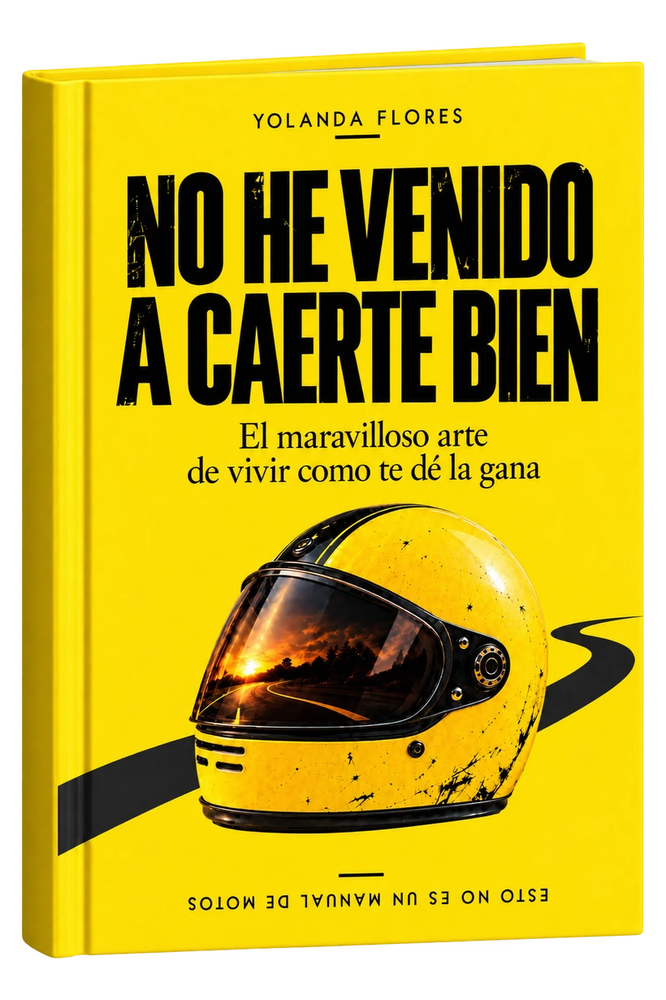

01
DECIR «NO»
SIN MONTAR
UN JUICIO
Los límites, las explicaciones eternas y esa manía de pedir perdón por tener planes propios.
El maravilloso arte de vivir como te dé la gana.
Para quienes están un poco cansados de ser impecables, productivos y majísimos las veinticuatro horas del día.

Seamos honestos: llevamos demasiado tiempo intentando hacerlo todo bien. Sonreír donde no apetece. Decir que sí para no dar explicaciones. Y escuchar consejos de personas que ni siquiera han terminado de entender la pregunta.
No he venido a caerte bien es una conversación sin demasiados filtros sobre amistades, límites, postureo, tecnología y esas reglas que todos seguimos sin recordar quién las puso.
Y sí, también hay autocrítica. Porque una cosa es tener criterio propio y otra bastante distinta creerse infalible.
LEE UN ADELANTO GRATISDe algunas cosas que nos pasan a todos. Aunque no todos tengamos ganas de reconocerlo.
Los límites, las explicaciones eternas y esa manía de pedir perdón por tener planes propios.
Etiquetas psicológicas de saldo, postureo, algoritmos y opiniones que nadie había solicitado.
La libertad tiene letra pequeña. A veces consiste en elegir. Y otras, en saber dar la vuelta.
Unas líneas del libro. Sin contexto, sin drama y sin necesitar una suscripción.
«No es paz interior.
Es pereza selectiva.»
«No quiero mejorar todos los días.
Hay días en los que quiero ser exactamente igual de mediocre que ayer.
Incluso, si me organizo bien, un poco peor.»
Normal. Mejor lee unas páginas y decide tú. Incluye el prólogo y un vistazo al capítulo 8.
Si buscas un libro para que te dé siempre la razón, seguramente no sea este. Si te apetece reírte, pensar y llevarme la contraria cuando haga falta, aquí lo tienes.
En CoolLibri, busca «No he venido a caerte bien» de Yolanda Flores. El precio y las condiciones de pedido se confirman allí.